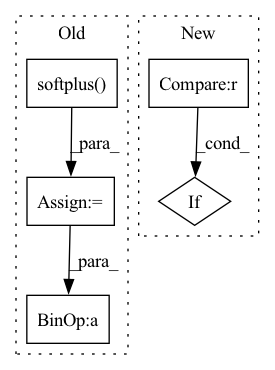

Pattern ID :38025
Before Change
pos_scores = torch.sum(torch.mul(u_embeddings, posi_embeddings), axis=1)
neg_scores = torch.sum(torch.mul(u_embeddings, negi_embeddings), axis=1)
mf_loss = torch.mean(self.softplus( -(pos_scores - neg_scores)) )
// maxi = self.sigmoid(pos_scores - neg_scores)
// mf_loss = -1 * torch.mean(maxi)
// cul regularizer
u_embeddings_pre = self.user_embedding.weight[user, :]
posi_embeddings_pre = self.item_embedding.weight[pos_item, :]
negi_embeddings_pre = self.item_embedding.weight[neg_item, :]
// regularizer = torch.norm(u_embeddings, p=2)+torch.norm(posi_embeddings, p=2)+torch.norm(negi_embeddings, p=2)
regularizer = torch.norm(u_embeddings_pre, p=2) + torch.norm(posi_embeddings_pre, p=2) +\
torch.norm(negi_embeddings_pre, p=2)
emb_loss = self.delay * regularizer / self.batch_size
// print("basic loss cost time: {}".format(time.time() - st))
if self.n_factors > 1 and self.cor_decay > 1e-9:
cor_users, cor_items = sample_cor_samples(self.n_users, self.n_items, self.cor_batch_size)
cor_users = torch.LongTensor(cor_users).to(self.device)
cor_items = torch.LongTensor(cor_items).to(self.device)
cor_u_embeddings = torch.index_select(u_embedding, dim=0, index=cor_users)
cor_i_embeddings = torch.index_select(i_embedding, dim=0, index=cor_items)
cor_loss = self.create_cor_loss(cor_u_embeddings, cor_i_embeddings)
loss = mf_loss + emb_loss + self.cor_decay * cor_loss
// print("mf :{:.4f}, emb :{:.4f}, cor :{:.4f}".format(mf_loss.item(), regularizer.item(), cor_loss.item()))
else:
loss = mf_loss + emb_loss
// print("mf :{:.4f}, emb :{:.4f}, cor :{:.4f}".format(mf_loss.item(), regularizer.item(), 0.0))
// print("full loss cost time: {}".format(time.time() - st))
return lossAfter Change
return u_g_embeddings, i_g_embeddings
def calculate_loss(self, interaction):
if self.restore_user_e is not None or self.restore_item_e is not None:
self.restore_user_e, self.restore_item_e = None, None
user = interaction[self.USER_ID]In pattern: SUPERPATTERN
Frequency: 3
Non-data size: 5
Instances Fragment ID: 108872269
Project Name: rucaibox/recbole
Commit Name: 210deb20fdbedae80baa4e808ed08326a696027f
Time: 2020-09-12
Author: 2015201909@ruc.edu.cn
File Name: recbox/model/general_recommender/dgcf.py
M Class Name: DGCF
N Class Name: DGCF
M Method Name: calculate_loss(2)
N Method Name: calculate_loss(2)
M Parent Class: GeneralRecommender
N Parent Class: GeneralRecommender
M File Name: recbox/model/general_recommender/dgcf.py
N File Name: recbox/model/general_recommender/dgcf.py
M Start Line: 231
M End Line: 270
N Start Line: 204
N End Line: 235
Before Change
def forward(self, batch_size,z=None):
z = Variable(torch.rand(batch_size, self.z_dim), requires_grad = False).to(self.device) if z is None else z
x = F.softplus( self.bn1(self.fc1(z)) + self.bn1_b)
x = F.softplus(self.bn2(self.fc2(x)) + self.bn2_b)
x = F.softplus(self.fc3(x))
return x
After Change
z = Variable(torch.rand(batch_size, self.z_dim), requires_grad = False).to(self.device) if z is None else z
for _ in range(self.num_hidden):
z = self.activations[_](self.bn_layers[_](self.layers[_](z)) + self.bn_b[_])
if len(self.activations)==self.num_hidden+1 :
z = self.activations[self.num_hidden](self.fc(z))
return z
Fragment ID: 108872277
Project Name: ygzwqzd/lamda-ssl
Commit Name: ea5ee280fc4c0242970da002d41f42c1aaed9c96
Time: 2022-03-18
Author: 1129198222@qq.com
File Name: Semi_sklearn/Network/ImprovedGan.py
M Class Name: Generator
N Class Name: Generator
M Method Name: forward(3)
N Method Name: forward(3)
M Parent Class: nn.Module
N Parent Class: nn.Module
M File Name: Semi_sklearn/Network/ImprovedGan.py
N File Name: Semi_sklearn/Network/ImprovedGan.py
M Start Line: 74
M End Line: 78
N Start Line: 95
N End Line: 100
Before Change
loss_q = loss_q1 + loss_q2
cql_alpha = torch.nn.functional.softplus( self.lamda) .data[0]
self.logger.store(CQLalpha=cql_alpha)
if "rho" in self.algo:
samples = 10
// Sample from previous policy (10 samples)
cql_loss_q1 = None
cql_loss_q2 = None
for sample in range(samples):
sample_action, _ = self.ac.pi(o)
if cql_loss_q1 is None:
cql_loss_q1 = self.ac.q1(o,sample_action).view(-1,1)
cql_loss_q2 = self.ac.q2(o,sample_action).view(-1,1)
else:
cql_loss_q1 = torch.cat((cql_loss_q1,self.ac.q1(o,sample_action).view(-1,1) ),dim=1)
cql_loss_q2 = torch.cat((cql_loss_q2,self.ac.q2(o,sample_action).view(-1,1) ),dim=1)
cql_loss_q1 = cql_loss_q1-np.log(samples)
cql_loss_q2 = cql_loss_q2-np.log(samples)
cql_loss_q1 = torch.logsumexp(cql_loss_q1,dim=1).mean()
cql_loss_q2 = torch.logsumexp(cql_loss_q2,dim=1).mean()
// Sample from dataset
cql_loss_q1 -= self.ac.q1(o, a).mean()
cql_loss_q2 -= self.ac.q2(o, a).mean()
avg_q = 0.5*(cql_loss_q1.mean() + cql_loss_q2.mean()).detach().cpu()
loss_q += cql_alpha*(cql_loss_q1.mean() + cql_loss_q2.mean())
else:
samples = 10
q1_pi_samples = None
q2_pi_samples = None
// Add samples from previous policy
o_rep = o.repeat_interleave(repeats=samples,dim=0)
o2_rep = o2.repeat_interleave(repeats=samples,dim=0)
// o_rep = o.repeat_interleave(samples,1)
// Samples from current policy
sample_action, logpi = self.ac.pi(o_rep)
q1_pi_samples = self.ac.q1(o_rep,sample_action).view(-1,1) - logpi.view(-1,1).detach()
q2_pi_samples = self.ac.q2(o_rep,sample_action).view(-1,1) - logpi.view(-1,1).detach()
q1_pi_samples = q1_pi_samples.view((o.shape[0],-1))
q2_pi_samples = q2_pi_samples.view((o.shape[0],-1))
sample_next_action, logpi_n = self.ac.pi(o2_rep)
q1_next_pi_samples = self.ac.q1(o2_rep,sample_next_action).view(-1,1) - logpi_n.view(-1,1).detach()
q2_next_pi_samples = self.ac.q2(o2_rep,sample_next_action).view(-1,1) - logpi_n.view(-1,1).detach()
q1_next_pi_samples = q1_next_pi_samples.view((o2.shape[0],-1))
q2_next_pi_samples = q2_next_pi_samples.view((o2.shape[0],-1))
// import ipdb; ipdb.set_trace()
// for sample in range(samples):
// sample_action, logpi = self.ac.pi(o)
// if q1_pi_samples is None:
// q1_pi_samples = self.ac.q1(o,sample_action).view(-1,1) - logpi.view(-1,1)
// q2_pi_samples = self.ac.q2(o,sample_action).view(-1,1) - logpi.view(-1,1)
// else:
// q1_pi_samples = torch.cat((q1_pi_samples,self.ac.q1(o,sample_action).view(-1,1) - logpi.view(-1,1) ),dim=1)
// q2_pi_samples = torch.cat((q2_pi_samples,self.ac.q2(o,sample_action).view(-1,1) - logpi.view(-1,1) ),dim=1)
// Add samples from uniform sampling
sample_action = np.random.uniform(low=self.env.action_space.low,high=self.env.action_space.high,size=(q1_pi_samples.shape[0]*10,self.env.action_space.high.shape[0]))
sample_action = torch.FloatTensor(sample_action)
log_pi = torch.FloatTensor([np.log(1/np.prod(self.env.action_space.high-self.env.action_space.low))])
q1_rand_samples = self.ac.q1(o_rep,sample_action).view(-1,1) - log_pi.view(-1,1).detach()
q2_rand_samples = self.ac.q2(o_rep,sample_action).view(-1,1) - log_pi.view(-1,1).detach()
//-torch.FloatTensor([np.log(2*samples)])
q1_rand_samples = q1_rand_samples.view((o.shape[0],-1))
q2_rand_samples = q2_rand_samples.view((o.shape[0],-1))
cql_loss_q1 = torch.logsumexp(torch.cat([q1_pi_samples,q1_next_pi_samples,q1_rand_samples],dim=1),dim=1).mean()
cql_loss_q2 = torch.logsumexp(torch.cat((q2_pi_samples,q2_next_pi_samples,q2_rand_samples),dim=1),dim=1).mean()
// for sample in range(samples):
// sample_action = np.random.uniform(low=self.env.action_space.low,high=self.env.action_space.high,size=(q1_pi_samples.shape[0],self.env.action_space.high.shape[0]))
// sample_action = torch.FloatTensor(sample_action)
// log_pi = np.log(1/np.prod(self.env.action_space.high-self.env.action_space.low))
// q1_pi_samples = torch.cat((q1_pi_samples,self.ac.q1(o,sample_action).view(-1,1) - log_pi.view(-1,1) ),dim=1)
// q2_pi_samples = torch.cat((q2_pi_samples,self.ac.q2(o,sample_action).view(-1,1) - log_pi.view(-1,1) ),dim=1)
// cql_loss_q1 = q1_pi_samples-np.log(2*samples)
// cql_loss_q2 = q2_pi_samples-np.log(2*samples)
// cql_loss_q1 = torch.logsumexp(cql_loss_q1,dim=1).mean()
// cql_loss_q2 = torch.logsumexp(cql_loss_q2,dim=1).mean()
// Sample from dataset
cql_loss_q1 -= self.ac.q1(o, a).mean()
cql_loss_q2 -= self.ac.q2(o, a).mean()
avg_q = 0.5*(cql_loss_q1.mean() + cql_loss_q2.mean()).detach().cpu()
loss_q += cql_alpha* (cql_loss_q1.mean() + cql_loss_q2.mean())
// Useful info for loggingAfter Change
cql_loss_q2 -= self.ac.q2(o, a).mean()*self.lamda
// Update the cql-alpha
if "lagrange" in self.algo :
cql_alpha = torch.clamp(self.log_lamda.exp(), min=0.0, max=1000000.0)
self.lamda = cql_alpha
cql_loss_q1 = cql_alpha*(cql_loss_q1-self.target_action_gap) Fragment ID: 108872258
Project Name: hari-sikchi/offline_rl
Commit Name: bf9dfc7b6c75f6f21296e7f7e5190e5abb675603
Time: 2021-10-04
Author: harshitsikchi8@gmail.com
File Name: CQL/cql.py
M Class Name: CQL
N Class Name: CQL
M Method Name: compute_loss_q(2)
N Method Name: compute_loss_q(2)
M Parent Class:
N Parent Class:
M File Name: CQL/cql.py
N File Name: CQL/cql.py
M Start Line: 264
M End Line: 358
N Start Line: 327
N End Line: 362